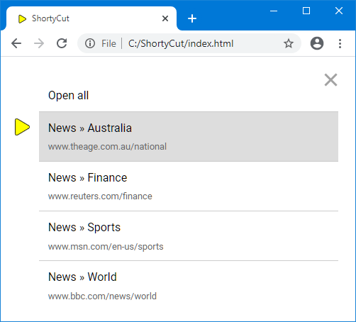

Multi-link shortcuts
Multi-link shortcuts
Sometimes web pages provide similar or complementing information. For example, news websites usually have index pages per category and region. Separate keywords can be used to bookmark them individually:
[news-au] News » Australia https://www.theage.com.au/national
[news-finance] News » Finance https://www.reuters.com/finance
[news-sports] News » Sports https://www.msn.com/en-us/sports
[news-world] News » World https://www.bbc.com/news/world
As the number of keyword variations grows, it becomes harder to remember them. It's usually easier to assign all related pages to the same keyword:
[news] News » Australia https://www.theage.com.au/national
[news] News » Finance https://www.reuters.com/finance
[news] News » Sports https://www.msn.com/en-us/sports
[news] News » World https://www.bbc.com/news/world
When entering a keyword with multiple links, ShortyCut shows a list to choose from:

The "Open all" item on top of the list can be used to open all links in new tabs. This can also be set as the default behavior in the configuration, causing ShortyCut to always open new tabs without showing the list first. On top of that, each shortcut can override the default behavior and enforce to either show the list or open new tabs.
Show a list
A question mark (?) in front of links causes the keyword to always show the list:
[news] News » Australia ?https://www.theage.com.au/national
[news] News » Finance ?https://www.reuters.com/finance
[news] News » Sports ?https://www.msn.com/en-us/sports
[news] News » World ?https://www.bbc.com/news/world
In this example, the news keyword will always show the list, even if the default behavior is set to open new tabs.
Open new tabs
A caret (^) in front of links causes the keyword to always open new tabs:
[news] News » Australia ^https://www.theage.com.au/national
[news] News » Finance ^https://www.reuters.com/finance
[news] News » Sports ^https://www.msn.com/en-us/sports
[news] News » World ^https://www.bbc.com/news/world
In this example, the news keyword will always open new tabs, even if the default behavior is set to show the list.
Ignore previous links
An equals sign (=) in front of a link causes all previous links to be discarded:
[news] News » Australia ?https://www.theage.com.au/national
[news] News » Finance ?https://www.reuters.com/finance
[news] News » Sports ?https://www.msn.com/en-us/sports
[news] News » World =https://www.bbc.com/news/world
In this example, importing the last line will cause ShortyCut to discard all previous links. The news keyword is treated as if it had only one link (world news). It's the same effect as if the first three lines were not there at all.
Ignoring previous links is rarely needed. It can be used to override individual keywords when importing shared shortcut collections. It can also be used to temporarily redirect or repurpose a keyword, without having to delete (and later restore) the current set of links.
Mixing behaviors
The equals sign (=) always causes the previous links to be discarded. The behavior for the remaining shortcuts is determined only by the last link.
[news] News » Australia https://www.theage.com.au/national
[news] News » Finance =https://www.reuters.com/finance
[news] News » Sports ^https://www.msn.com/en-us/sports
[news] News » World ?https://www.bbc.com/news/world
In this example, the equals sign (=) in finance news causes the previous link (Australia news) to be discarded. The keyword will eventually have three links (finance, sports, and world news). A list will be displayed, because the last link (world news) has a question mark (?). If it didn't have any indicator, the configured default behavior would apply. The caret (^) in front of the sports link is always ignored and can be omitted.
Search buckets
The hash symbol (#) in front of a link marks it as "searchable". These links are not directly opened through the keyword but are accessible via full-text search only. Searchable links exist in parallel to the regular links that open new tabs or show an interactive list. Please see "Search buckets" for a more detailed explanation.